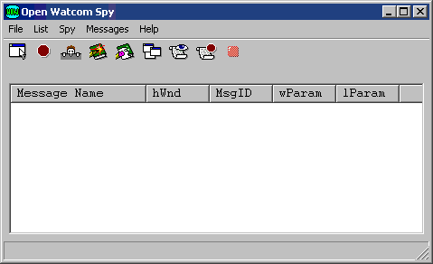
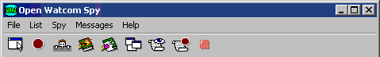
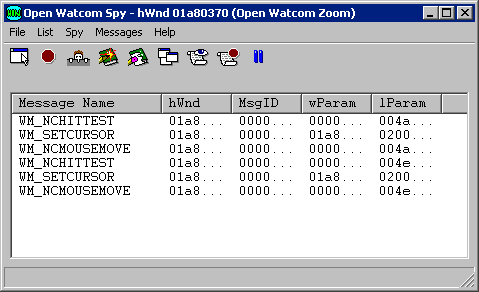
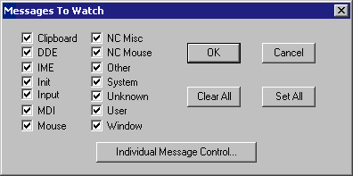
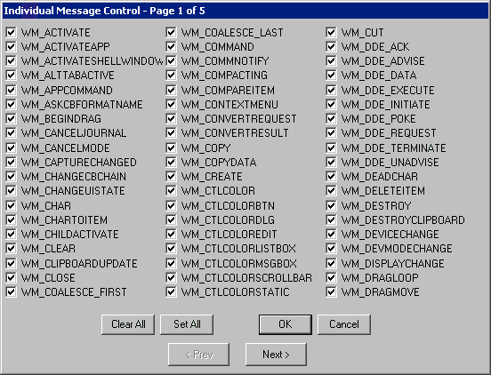
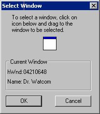
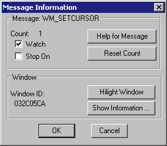
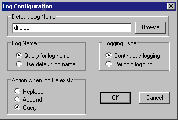
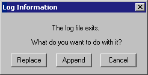
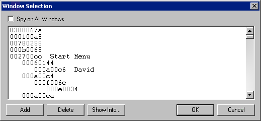

Index of Topics
- - A -
- Adding a Window
- C -
- Changing the Monitoring State of the Message
Clipboard Messages
- D -
- DDE Messages
Deleting a Window
Displaying Help for the Message
Displaying Information about the Receiving Window
- H -
- Highlighting the Receiving Window
- I -
- Init Messages
Input Messages
- L -
- Listing All Windows
Loading a Message Configuration
- M -
- MDI Messages
Monitoring All Windows
Mouse Messages
- N -
- NC Misc Messages
NC Mouse Messages
- O -
- Other Messages
- P -
- Pause Spying
Predefined Spy Message Classes
- Q -
- Quitting Spy
- R -
- Resetting the Usage Count
- S -
- Saving a Message Configuration
Saving and Loading Message Configurations
Selecting Individual Messages
Selecting Message Classes
Selecting Messages to Monitor
Spy
The Spy Menu Bar
The Spy Toolbar
The Spy Window
Spy: Action When Log File Exists
Spy: Always On Top
Spy: Automatic Scrolling
Spy: Clearing the Message List
Spy: Configuring the Log File
Spy: Default Log Name
Spy: Log Name
Spy: Logging Type
Spy: Marking the Message List
Spy: Pause Logging
Spy: Saving the Contents of the Message List
Spy: Setting the Fonts
Spy: Start Logging
Spy: Stop Logging
Spy: Working with Log Files
Spying
Spying on More Windows
Start Spying
Starting Spy
Stop Spying
System Messages
- U -
- Unknown Messages
User Messages
Using Spy
Using the Auto Save Feature
- V -
- Viewing Information
Viewing Information About a Window
Viewing Message Information
Viewing Window Information
- W -
- Window Messages
Spy
Most Windows programs are message based. Messages are sent to windows that programs create and the programs are
expected to react to the messages appropriately.
When a program does not react as expected, you must spend time debugging the program to find and correct the errors.
Spy is a tool designed to help you debug Windows programs by letting you view the messages sent to windows in Win16
and Win32 applications. By watching how a program reacts to the messages it receives, you can isolate the parts of
your code that are causing problems and then make the required corrections.
With Spy:
- you can determine if your window is receiving the messages you expect it to receive.
- you can verify that your window is receiving messages in the order you expect.
- novice Windows programmers can become familiar with Windows messages, by viewing the messages and their parameters.
As you run your Windows programs, Spy displays messages in the Spy window. You control the window using the menu
items or the Spy toolbar.
Using Spy
This section discusses the following topics:
- Starting Spy
- Quitting Spy
- The Spy Menu Bar
- The Spy Toolbar
Starting Spy
To start Spy, double click on the Spy icon. This opens the Spy window. When you start the application, the
Spy window is always empty. This window displays the menu bar, message list and a toolbar.

Figure 1. The Spy window contains the menu bar, message list and toolbar.
Quitting Spy
To exit Spy, choose Exit from the File menu of the Spy window.
The menu bar consists of the following five menus:
- File
- Save to a file, start and pause logging, and configure the session
List
- Manipulate the message list by clearing, marking, and autoscrolling it
Spy
- Start, stop, and pause the Spy session, select the windows you want to monitor, and gain access to information in windows.
Messages
- Select the messages you want to monitor or stop on.
Help
- Gain access to on-line help information

Figure 2. The Spy menu bar.
The Spy toolbar provides quick access to commonly used menu items. The following explains the function each tool
bar button performs as well as the equivalent menu item.
- SELECT WINDOW
- Select a single window and start spying on it or add a window to the list of windows being spied on. This is equivalent
to the Select Window and Add Window items in the Spy menu.
STOP
- Stop monitoring the selected window(s) and cancel the window selections. This is equivalent to the Stop Spying item
in the Spy menu.
PEEK AT WINDOW
- Obtain information about a selected window. This is equivalent to the Peek at Window item in the Spy menu.
MARK
- Record your own comments in the Spy window. This is equivalent to the Mark item in the List menu.
CLEAR MESSAGE LIST
- Erase all messages from the Spy window. This is equivalent to the Clear Message List item in the List menu.
SHOW SELECTED WINDOWS
- Obtain information about the windows open on your desktop. This is equivalent to the Show Selected Windows item in the
Spy menu.
MESSAGES TO WATCH
- Select the messages you want to monitor and log. This is equivalent to the Messages to Watch item in the Messages menu.
MESSAGES TO STOP ON
- Specify the messages you want Spy to stop on when it encounters them. This is equivalent to the Messages to Stop on
item in the Messages menu.
Figure 3. The Spy toolbar.
Only one of the following three toolbar buttons appears at a time.
- NOT SPYING
- This button appears when Spy is not monitoring any windows. Pressing this button has no effect. It is simply an
indicator to you that spying is not in progress.
STOP SPYING TEMPORARILY
- This button appears when Spy is in the process of monitoring one or more windows. Choosing this button temporarily suspends
monitoring operations. This is equivalent to the Stop Spying Temporarily item in the Spy menu.
CONTINUE SPYING
- This button appears when you instruct Spy to temporarily suspend monitoring operations. Choosing this button resumes
monitoring operations. This is equivalent to the Continue Spying item in the Spy menu.
The Spy Window
The Spy window contains the menu bar and the toolbar discussed above. However, most of the Spy window is occupied
by the message list. This is where Spy logs the messages it monitors.

Figure 4. Once you start spying, the message list displays the messages selected for monitoring.
For the messages it monitors Spy displays the following information in the message list:
- Message Name
- Name of the message sent.
hWnd
- The handle of the window that received the message.
MsgID
- The numeric identifier of the message.
wParam
- Data specific to the message. This is the value that will be passed as the wparam parameter of the window's callback
function. To find the meaning of this parameter see the section Viewing Message Information for information on how
to get help on a message or refer to your Windows 3.x or Win32 programmer's documentation.
lParam
- Data specific to the message. This is the value that will be passed as the lparam parameter of the window's callback
function. To find the meaning of this parameter see the section Viewing Message Information for information on how
to get help on a message or refer to your Windows 3.x or Win32 programmer's documentation.
Several spy functions affect the appearance or behavior of the Spy window.
- Setting the Fonts
- Saving
- Clearing the Message List
- Marking the Message List
- Automatic Scrolling
- Always On Top
Spy: Setting the Fonts
The Set Font item in the File menu allows you to set the font, style, and size for the text in the Spy window. Choosing
this item opens the Font dialog box. Select the desired font details and click on OK to close the dialog and apply
the fonts.
Spy: Saving the Contents of the Message List
The Save and Save as items under the File menu in Spy allow you to save the contents of the message list to a text file.
Saving information to a file enables you to print the output later or annotate the text file on-line.
Choose Save from the File menu in the Spy window to save the message list information into the current working directory.
A message box appears indicating the path to which Spy saved the file.
Choose Save As from the File menu to specify the file to which you want to save the currently displayed information.
This opens a Save As dialog box where you select the desired file. Click on OK when completed. A message
box appears indicating the path to which Spy saved the file.
Spy: Clearing the Message List
Choose Clear from the File menu to delete all information from the message list.
Spy: Marking the Message List
Use the Mark function to annotate the information in the message list by entering text into it.
- To mark the message list :
-
(1)
- Choose Mark from the List menu.
This opens the Set Mark dialog box.

Figure 5. With the Set Mark dialog, you can annotate the message list by entering text
and choosing a mark style.
(2)
- Type the desired text in the Enter Mark Text field.
The text you enter will appear at the end of the message list
(3)
- Select the desired Mark Style option.
These options determine how the entered text is formatted when it is added to the message list When the boxed option is
selected, the text is displayed bordered by asterisks. With this option the text is easier to find. When the
plain option is selected, the text is displayed as it is entered.
(4)
- Click on OK when completed.
The Set Mark dialog closes and the text in the dialog appears at the end of the message list.

Figure 6. Text you enter in the Set Mark dialog appears in the message list in the selected
style.
As Spy writes new information to the message list, the information is added to the bottom of the list. Choosing
Auto Scroll Message List from the List menu tells Spy to automatically scroll the information in the message list so that
the most recent information written to the message list always appears on the screen. The Auto Scroll Message List
menu item is checked when this feature is active.
When this feature is deactivated, new messages written to the message list are added to the bottom of the list and
you must use the scroll bar to scroll down and view the information.
Spy: Always On Top
The Spy window behaves like all other windows-it moves into the background when other windows are selected. To ensure
the Spy window is visible at all times, select the Always On Top item from the File menu. The Always On Top menu item
is checked when this feature is enabled. To turn this feature off, select the item again from the File menu.
Selecting Messages to Monitor
Each window receives an overwhelming volume of messages. Generally, you will only be interested in a small subset
of these. Spy lets you limit the messages on which it will report so that you do not have to sort through all the extraneous
data yourself.
Spy maintains two lists of messages: the messages to watch list and the messages to stop on list. When
spy monitors a message in the messages to watch list it adds information about that message to the Message List in the Spy
window. When spy monitors a message in the messages to stop on list it displays a message box reporting that the message
has been encountered and pauses spying operations until you restart them by selecting Continue Spying from the spy menu.
Any message that does not appear on either list is ignored by Spy
To modify the messages to watch list choose Messages To Watch from the Messages menu. To modify the messages
to stop on list choose Messages To Stop On from the Messages menu. In either case, the process of modifying the list
is the same. The rest of this section explains the dialogs you use to do this.
Selecting Individual Messages
The most precise way to modify the messages to watch or messages to stop on lists is simply to select a set of individual
messages to appear on the list. To select a set of individual messages to monitor follow these procedures.
- (1)
- Choose Messages To Watch or Messages To Stop On from the Messages Menu.
This opens a Message Class dialog box. The caption of the dialog box reflects the menu item selected.

Figure 7. In the Message Class dialog, select the Individual Message Control button.
(2)
- Click on the Individual Message Control button.
This opens a dialog that contains a check box for each message.

Figure 8. In the Message Range dialog, you select the individual messages you want Spy
to watch or stop on.
(3)
- Add or remove messages from the list of messages.
A message appears on the selected list if it is checked. The following buttons are provided for your convenience:
- Clear All
- Uncheck all messages on this dialog.
Set All
- Check all messages on this dialog.
(4)
- Choose an action button.
The following buttons allow you to proceed from this dialog:
- Next
- Close the current dialog and open the one for the alphabetic range of messages immediately following this one. Changes
made on the current dialog will not be saved until you press the OK button on some future message range dialog.
Prev
- Close the current dialog and open the one for the alphabetic range of messages immediately preceding this one. Changes
made on the current dialog will not be saved until you press the OK button on some future message range dialog.
OK
- Close the current dialog and save all changes made in it and in previous dialog that were exited using the Next or Prev button.
Cancel
- Close the current dialog and ignore all changes made in it and in previous dialog that were exited using the Next or Prev
button.
(5)
- Select OK on the Message Class dialog.
The message class dialog closes and your message selections take effect. If you choose Cancel on the Message Class
dialog your message selections will be discarded.
Selecting Message Classes
Although modifying the list of messages to watch or stop on by selecting individual messages is more precise, you may
find this process tedious. To speed up the process several message classes have been defined for you. These classes
group messages by their function. The messages contained in each message class are listed in the section entitled Predefined Spy Message Classes
Selecting a message class adds all the individual messages in that class to the selected list. Similarly, de-selecting
a message class removes all the individual messages in that class from the selected list.
To select messages to monitor by class follow these procedures:
- (1)
- Choose Messages To Watch or Messages To Stop On from the Messages Menu.
This opens a Message Class dialog box. The caption of the dialog box reflects the menu item selected.
Figure 9. In the Message class dialog, choose the message classes you want Spy to monitor.
(2)
- Click on the check box beside the message classes you want to monitor.
A message class is selected when an X appears in the check box. The following buttons are available for your convenience:
- Clear All
- De-select all of the message classes.
Set All
- Select all of the message classes.
(3)
- Click on OK to save your choices and close the dialog.
Selecting Cancel on this dialog exits without saving your selections.
Predefined Spy Message Classes
The sections that follow list the messages contained in each message class that Spy defines for you.
Messages followed by (*) are undocumented messages.
Messages followed by (**) are available under Win32 only.
Clipboard Messages
WM_ASKCBFORMATNAME WM_CHANGECBCHAIN
WM_CLEAR
WM_CLIPBOARDUPDATE (**)
WM_COPY
WM_CUT
WM_DESTROYCLIPBOARD WM_DRAWCLIPBOARD
WM_HSCROLLCLIPBOARD WM_PAINTCLIPBOARD
WM_PASTE
WM_RENDERALLFORMATS
WM_RENDERFORMAT WM_SIZECLIPBOARD
WM_UNDO
WM_VSCROLLCLIPBOARD
DDE Messages
WM_DDE_ACK
WM_DDE_ADVISE
WM_DDE_DATA
WM_DDE_EXECUTE
WM_DDE_INITIATE WM_DDE_POKE
WM_DDE_REQUEST WM_DDE_TERMINATE
WM_DDE_UNADVISE
Init Messages
WM_INITDIALOG WM_INITMENU
WM_INITMENUPOPUP WM_UNINITMENUPOPUP (**)
WM_APPCOMMAND (**) WM_BEGINDRAG (*)
WM_CHAR
WM_CHARTOITEM
WM_COMMAND
WM_CONTEXTMENU (**)
WM_COPYDATA (**) WM_DEADCHAR
WM_DRAGLOOP (*) WM_DRAGMOVE (*)
WM_DRAGSELECT (*) WM_DROPOBJECT (*)
WM_EXITSIZEMEOVE (*) WM_HSCROLL
WM_INPUT (**) WM_INPUT_DEVICE_CHANGE
(**)
WM_INPUTLANGCHANGE (**) WM_INPUTLANGCHANGEREQUEST (**)
WM_KEYDOWN
WM_KEYUP
WM_LBTRACKPOINT (*) WM_MENUCHAR
WM_MENUCOMMAND (**) WM_MENUDRAG (**)
WM_MENUGETOBJECT (**) WM_MENURBUTTONUP (**)
WM_MENUSELECT WM_NEXTMENU
(*)
WM_NOTIFY (**) WM_NOTIFYFORMAT
(**)
WM_QUERYDROPOBJECT (*) WM_TCARD (**)
WM_UNICHAR (**) WM_VSCROLL
MDI Messages
WM_ISACTIVEICON (*) WM_MDIACTIVATE
WM_MDICASCADE WM_MDICREATE
WM_MDIDESTROY WM_MDIGETACTIVE
WM_MDIICONARRANGE WM_MDIMAXIMIZE
WM_MDINEXT
WM_MDIRESTORE
WM_MDISETMENU WM_MDITILE
Mouse Messages
WM_CAPTURECHANGED (**) WM_LBUTTONDBLCLK
WM_LBUTTONDOWN WM_LBUTTONUP
WM_MBUTTONDBLCLK WM_MBUTTONDOWN
WM_MBUTTONUP WM_MOUSEACTIVATE
WM_MOUSEHOVER (**) WM_MOUSEHWHEEL (**)
WM_MOUSELEAVE (**) WM_MOUSEMOVE
WM_MOUSEWHEEL (**) WM_RBUTTONDBLCLK
WM_RBUTTONDOWN WM_RBUTTONUP
WM_SETCURSOR WM_XBUTTONDBLCLK
(**)
WM_XBUTTONDOWN (**) WM_XBUTTONUP (**)
NC Misc Messages
WM_NCACTIVATE WM_NCCALCSIZE
WM_NCCREATE
WM_NCDESTROY
WM_NCPAINT
NC Mouse Messages
WM_NCHITTEST WM_NCLBUTTONDBLCLK
WM_NCLBUTTONDOWN WM_NCLBUTTONUP
WM_NCMBUTTONDBLCLK WM_NCMBUTTONDOWN
WM_NCMBUTTONUP WM_NCMOUSEHOVER
(**)
WM_NCMOUSELEAVE (**) WM_NCMOUSEMOVE
WM_NCRBUTTONDBLCLK WM_NCRBUTTONDOWN
WM_NCRBUTTONUP WM_NCXBUTTONDBLCLK
(**)
WM_NCXBUTTONDOWN (**) WM_NCXBUTTONUP (**)
Other Messages
WM_CHANGEUISTATE (**) WM_COALESCE_FIRST
WM_COALESCE_LAST WM_COMMNOTIFY
WM_CONVERTREQUEST (*) WM_CONVERTRESULT (*)
WM_DROPFILES WM_INTERIM
(*)
WM_PENWINFIRST WM_PENWINLAST
WM_PRINT (**) WM_PRINTCLIENT
(**)
WM_QUERYSAVESTATE (*) WM_QUEUESYNC
WM_QUERYUISTATE (**) WM_SIZEWAIT (*)
WM_SYNCTASK (*) WM_TESTING (*)
WM_UPDATEUISTATE (**) WM_YOMICHAR (*)
System Messages
WM_CANCELJOURNAL (**) WM_COMPACTING
WM_DEVMODECHANGE WM_DEVICECHANGE (**)
WM_DISPLAYCHANGE (**) WM_ENDSESSION
WM_ENTERIDLE WM_ENTERMENULOOP
WM_EXITMENULOOP WM_FILESYSCHANGE (*)
WM_NULL
WM_POWER
WM_POWERBROADCAST (**) WM_SPOOLERSTATUS
WM_SYSCHAR
WM_SYSCOLORCHANGE
WM_SYSCOMMAND WM_SYSDEADCHAR
WM_SYSKEYDOWN WM_SYSKEYUP
WM_SYSTEMERROR (*) WM_SYSTIMER (*)
WM_THEMECHANGED (**) WM_TIMECHANGE
WM_TIMER
WM_USERCHANGED (**)
WM_WININICHANGE WM_WTSSESSION_CHANGE
(**)
User Messages
WM_USER
Unknown Messages
None
Window Messages
WM_ACTIVATE
WM_ACTIVATEAPP
WM_ACTIVATESHELLWINDOW (*) WM_ALTTABACTIVE (*)
WM_CANCELMODE WM_CREATE
WM_CHILDACTIVATE WM_CLOSE
WM_COMPAREITEM WM_CTLCOLOR
WM_CTLCOLORBTN (**) WM_CTLCOLORDLG (**)
WM_CTLCOLOREDIT (**) WM_CTLCOLORLISTBOX (**)
WM_CTLCOLORMSGBOX (**) WM_CTLCOLORSCROLLBAR (**)
WM_CTLCOLORSTATIC (**) WM_DELETEITEM
WM_DESTROY
WM_DRAWITEM
WM_DWMCOLORIZATIONCHANGED
(**)
WM_DWMCOMPOSITIONCHANGED (**)
WM_DWMNCRENDERINGCHANGED
(**)
WM_DWMWINDOWMAXIMIZEDCHANGE (**)
WM_ENABLE
WM_ENTERSIZEMOVE (*)
WM_ERASEBKGND WM_FONTCHANGE
WM_GETDLGCODE WM_GETFONT
WM_GETHOTKEY WM_GETICON
(**)
WM_GETMINMAXINFO WM_GETTEXT
WM_GETTEXTLENGTH WM_GETTITLEBARINFOEX (**)
WM_HELP (**) WM_ICONERASEBKGND
WM_KILLFOCUS WM_MEASUREITEM
WM_MOVE
WM_MOVING (**)
WM_NEXTDLGCTL WM_OTHERWINDOWCREATED
WM_OTHERWINDOWDESTROYED WM_PAINT
WM_PAINTICON WM_PALETTECHANGED
WM_PALETTEISCHANGING WM_PARENTNOTIFY
WM_QUERYDRAGICON WM_QUERYENDSESSION
WM_QUERYNEWPALETTE WM_QUERYOPEN
WM_QUERYPARKICON (*) WM_QUIT
WM_SETFOCUS
WM_SETFONT
WM_SETHOTKEY WM_SETICON
(**)
WM_SETREDRAW WM_SETTEXT
WM_SETVISIBLE (*) WM_SHOWWINDOW
WM_SIZE
WM_SIZING (**)
WM_STYLECHANGED (**) WM_STYLECHANGING (**)
WM_SYNCPAINT (*) WM_VKEYTOITEM
WM_WINDOWPOSCHANGED WM_WINDOWPOSCHANGING
Saving and Loading Message Configurations
Selecting messages to monitor can be an involved procedure because of the number of options available. Once selected,
the group of message selections is called a message configuration.
Spy allows you to save message configurations and recall them again. This section describes the functions relating
to message configurations:
- Using the Auto Save Feature
- Saving a Message Configuration
- Loading a Message Configuration
Using the Auto Save Feature
When the Auto Save Message Configuration feature is active Spy saves your message configuration each time you exit.
The next time you start Spy, the message configuration is automatically reloaded.
To activate or deactivate this feature choose the Auto Save Message Configuration item from the Messages menu.
When this feature is active its menu item is checked.
Saving a Message Configuration
With Spy you can save your message configurations so you can easily load a previous message configuration instead of reselecting
the desired messages.
To save a message configuration follow these procedures:
- (1)
- Select the messages you want to monitor as described in the sections entitled Selecting Message Classes
and Selecting Individual Messages.
(2)
- Choose Save Message Configuration from the Messages menu.
This opens a Save As dialog box.
(3)
- Specify the desired file name and path for this message configuration.
(4)
- Click on OK in the Save As dialog box when completed.
This saves the message configuration as specified and closes the dialog.
Loading a Message Configuration
To load a previously saved message configuration, follow these procedures:
- (1)
- Choose Load Message Configuration from the Messages menu.
The Open dialog box appears.
(2)
- Select the message configuration you previously saved.
(3)
- Click on OK.
The Open dialog box closes and Spy loads the selected message configuration.
Spying
Once you have selected the messages you want Spy to monitor, you select windows for Spy to watch. This starts spying
operations.
Start Spying
Message logging begins when you select a window to monitor. Spy monitors the selected window for the messages specified.
You can start spying by selecting one window to spy on, or choosing to spy on all windows.
- To spy on all windows:
-
(1)
- Choose All Windows from the Spy menu.
Spy begins immediately monitoring all windows for the specified messages. The caption bar specifies that you are
monitoring all windows.
- Note:
- You can use the All Windows menu item at any time, not just to start spying. If you begin spying by choosing one window,
then want to monitor all windows, choose All Windows from the Spy menu.
- To spy on one window:
-
(1)
- Choose Select Window from the Spy menu.
This minimizes the Spy window and opens the Select Window dialog which prompts you to choose a window to monitor.

Figure 10. The Select Window dialog displays information for the window on which the cursor
rests.
(2)
- Position the cursor inside the icon in the dialog box. Press the mouse button and hold it down.
As you move the cursor across the screen, the window on which the cursor is positioned has a highlighted border and information
about the selected window appears in the dialog box.
(3)
- Position the cursor on the window you want to monitor. Release the mouse button.
- Note:
- You can select only one window at a time using the Select Window dialog box.
(4)
- Click on OK to save this window selection.
This closes the Select Window dialog and returns you to the Spy window. The caption bar indicates the window you
are monitoring.
Spying on More Windows
Once you have started spying you can select additional windows to monitor, unless you chose All Windows to start the spy
process. You select additional windows in the same way you select one window.
- (1)
- Choose Add Window from the Spy menu.
This minimizes the Spy window and opens the Select Window dialog.
(2)
- Position the cursor inside the icon in the dialog box. Press the mouse button and hold it down.
Information about the currently selected window appears in the dialog.
(3)
- Position the cursor on the window you want to monitor. Release the mouse button.
- Note:
- You can select only one window at a time using the Select Window dialog box.
(4)
- Click on OK to save this window selection.
This closes the Select Window dialog and opens the Spy window. The window heading specifies that you are monitoring
multiple windows.
Stop Spying
Choose Done Spying from the Spy menu to stop spying on the selected windows. When you choose this item, Spy does
not retain the list of windows selected for spying.
Pause Spying
Choose Stop Spying Temporarily from the Spy menu to pause message logging. When you choose this item, Spy retains
the list of windows selected for spying.
The Stop Spying Temporarily menu item changes to Continue Spying when the pause is active. Choose Continue Spying
from the Spy menu to start spying again. This starts spying and changes the menu item back to Stop Spying Temporarily.
Double clicking on a message in the message list reveals a Message Information dialog box which contains additional information
about the selected message. This dialog displays the message, the number of times it has been issued, and the window
that received the selected instance of the message.

Figure 11. The Message Information dialog box displays additional information about the
selected message.
From the Message Information dialog you can perform the following actions:
- Reset the usage count
- Display Windows help for the message.
- Change the monitoring state for the message.
- Highlight the window that received the message.
- Display information about the window that received the message.
Resetting the Usage Count
You can reset the usage count for the message to zero by pressing the Reset Count button on the Message Information dialog.
The usage count will also be automatically reset to zero when you start spying or clear the message list.
Displaying Help for the Message
You can get more information about most messages, such as the meaning of their parameters, by the Help for Message button
on the Message Information dialog. This starts the Windows help facility to display the information. Help is
not available for all messages.
Changing the Monitoring State of the Message
The watch and stop on check boxes in the Message Information dialog indicate if the message appears in the messages to
watch or messages to stop on lists. You can add the message to either of these lists by checking the appropriate check
box or remove it by removing the check.
Highlighting the Receiving Window
If the window that received this message has not been destroyed you can highlight it by selecting the Highlight Window
button. This changes the border color of the window so it is easy to locate.
If the window that received this message has not been destroyed you can get additional information about it by selecting
the Show Information button. This opens a Window Information dialog that displays information such as the window's
class, style, size and position. For more information on the Window Information dialog see the section entitled Viewing Window Information.
Spy: Working with Log Files
By writing the information in the message list to a log file, you have a file you can look at in case a program you are
running terminates your applications. In such a situation, your message list is lost so you have no information to
refer to when debugging. Writing to a log file also allows you to print the output later or annotate the text file
on-line.
Spy: Configuring the Log File
Choosing Configure Log from the File menu opens the Log Configuration dialog where you customize Spy's behaviour when
it logs to a file. This dialog contains four sections where you specify information.

Figure 12. In the Log Configuration dialog you set the desired behaviour for Spy when logging
to a file.
Spy: Default Log Name
In the Default Log Name field, specify the file to which Spy writes when you begin logging. Clicking the Browse
button next to this field opens a Choose Log Name dialog that lets you browse your file structure while choosing the log
name.
Spy: Log Name
The settings in the Log Name section of the dialog indicate to Spy how the name of the log file should be determined when
the Log to File menu item is chosen.
When the Query for Log Name option is selected, Spy presents a prompt each time you select Log to File from the File
menu or the toolbar. This reveals a Choose Log Name dialog where you specify the file to which Spy writes the log information.
When the Use Default Log Name option is selected, Spy writes the log information to the file indicated in the Default
Log Name field in the Log Configuration dialog. No prompt appears.
Spy: Action When Log File Exists
The options in the Action When Log File Exists section of the Log Configuration dialog dictate how Spy behaves when you
choose Log to File and a log file already exists.
- Replace
- Spy writes over the existing log file. All information in the existing file is lost.
Append
- Spy adds the new information to the end of the existing log file.
Query
- Spy prompts you with a message box that allows you to choose a course of action-Replace, Append, or Cancel.

Figure 13. The Log Information message box appears when logging if the Query option is
selected on the Log Configuration dialog.
Spy: Start Logging
Choosing Log to File from the File menu tells Spy to write all new information added to the message list to the log file.
Depending on the options selected in the Log Configuration dialog, the following dialogs may appear when you choose
Log to File:
- Choose Log Name dialog-On this dialog you specify the file to which Spy writes the log information.
- Log Information dialog-On this dialog you choose a course of action for logging when the specified log file already exists.
- Note:
- Choosing Cancel on either of these dialogs closes the dialog and prevents logging from starting.
Spy: Logging Type
There are two ways to write information to the log file:
- Continuous Logging
- Periodic Logging
If the Continuous Logging option is activated, then as Spy writes information to the message list, it simultaneously writes
to a log file.
When the Periodic Logging option is activated, Spy writes information to the log file only after a reasonable amount
of information, as determined by the application, has been recorded in the message list
Periodic logging is more convenient because it is faster than continuous logging. However, if your system goes
down, some information will be lost. By simultaneously writing to the log file and the message list, continuous logging
allows you to store all information in a log file without the chance of losing information.
Spy: Stop Logging
Once the log is started, Spy continues writing to the log file until you stop logging. A check mark beside the Log
to File item in the File menu indicates that a log is being created. Choose this item again to stop logging.
Spy: Pause Logging
To temporarily stop writing information to the log file you can choose the Pause Log item from the File menu. A
check mark appears beside the item indicating that the log is currently paused. To restart logging, choose this item
again from the File menu.
In Spy you can view different window information using items in the Spy menu. You can view:
- information about a specific window
- a list of all windows open on your desktop
To view information about a window:
- (1)
- Choose Peek At Window from the Spy menu.
This minimizes the Spy window and opens the Peek At Window dialog box.
(2)
- Position the cursor inside the icon in the dialog box. Press the mouse button and hold it down.
As you move the cursor across the screen, the window on which the cursor is positioned has a highlighted border and information
about the selected window appears in the dialog box. The following information is displayed:
- Window
- the handle of the window and its title, if it has one
Class
- the name of the window class to which this window belongs
Parent
- the handle of the window's parent if it has one
Size
- the screen coordinates of the top right and bottom left corners of the window, followed by the window's size
Window Style
- the window's style bits
Class Style
- the style bits for the window's class
Child ID
- a numeric identifier associated with the window when it is created (This only appears if the selected window is a child window.)
(3)
- Position the cursor on the window you want to monitor. Release the mouse button.
(4)
- Click on OK to close the dialog box.
This closes the Peek at Window dialog box and returns you to the Spy window.
Listing All Windows
To view a list of all windows open on your desktop:
- (1)
- Choose Show Selected Windows from the Spy menu.
This opens the Window Selection dialog box which displays the following:
- window handles
- window captions

Figure 14. The Window Selection dialog displays a list of all windows currently open on
the desktop.
The information appears in a hierarchical manner. Windows with a parent are listed, indented, directly below
their parent. Windows currently being monitored by Spy are marked with an asterisk.
(2)
- From this dialog you can perform the following functions:
- Add a window for Spy to monitor
- Delete a window that Spy is monitoring
- Select all windows for monitoring
- View information about a window in the list
Adding a Window
You can add a window for Spy to monitor in two ways:
- (1)
- Double click on the line for the window you want to add, or
(2)
- Click once on the line for the desired window to select it and then select the Add button.
The window you added is now marked with an asterisk indicating that Spy is monitoring that window.
Click on OK to close the dialog and save the updated window list.
Deleting a Window
To delete a window that Spy is monitoring, do one of the following:
- (1)
- Double click on the line for the window you want to delete, or
(2)
- Click once on the line for the window that you no longer want Spy to monitor and then select the Delete button.
This removes the asterisk from beside the window handle, indicating that Spy is no longer monitoring that window.
Click on OK to close the dialog and save the updated window list.
Monitoring All Windows
To instruct spy to start spying on all windows open on the desktop, check the "Spy on all windows" check box.
Then chose the OK button to close the dialog and accept this selection.
To view information about a window in the list, do the following:
- (1)
- Click once on the line for the window whose information you want to view.
The selected line appears highlighted in the list.
(2)
- Select the Show Info button on the dialog.
The Window Information dialog box opens. The information in this dialog is identical to the information in the Peek
at Window dialog box. Refer to the section entitled Viewing Information About a Window
for a description of the fields in this dialog.
(3)
- Click OK.
The Window Information dialog closes and you return to the Window Selection dialog.
(4)
- Click OK on the Window Selection dialog to close it.